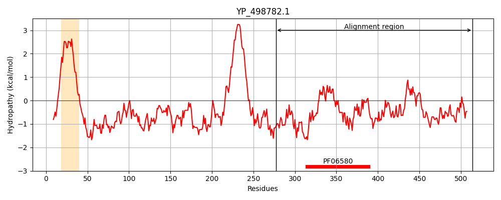
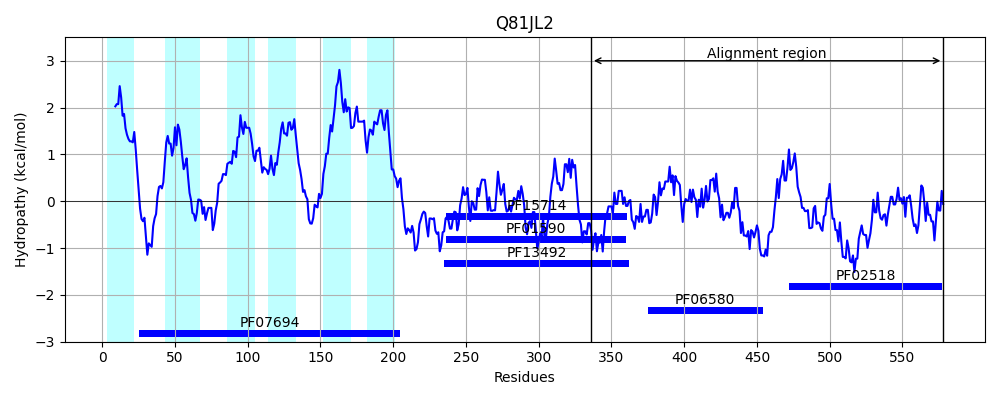
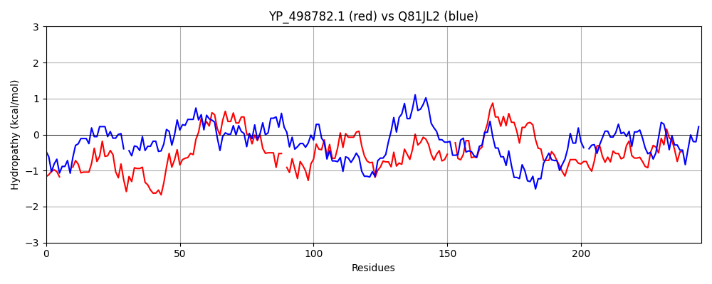

Hit Accession: Q81JL2
Hit TCID: 9.B.33.1.1
Hit Description: gnl|BL_ORD_ID|15725 gnl|TC-DB|Q81JL2|9.B.33.1.1 Sensor protein lytS OS=Bacillus anthracis GN=lytS PE=3 SV=1
Mach Len: 245
e:0.000000
Query TMS Count : 1
Hit TMS Count: 6
TMS-Overlap Score: 0.700000
Predicted Substrates:None
BLAST Alignment:
Score: 231 , Bit scores: 93 bits, E-value: 3.2e-20, Alignment length: 245, Percentage identity: 26
Query: 277 KNNSEL----EEINNYIYDLFESNEQLIHSIEHTERRLRDIQLKEIERQFQPHFLFNTMQTIQYLITLSPKLAQTVVQQLSQMLRYSLR-TNSHTVELNEELNYIEQYVAIQNIRFDDMIKLHIESSEEARHQTIGKMMLQPLIENAIKHG--RDTESLDITIRLTLARQNLHVLVCDNGIGMSSSRLQYVRQSLNNDVFDTKHLGLNHLHNKAMIQYGSHARLHIFSKRNQGTLICYKIPLSRG 514
KN ++L EE+ + +F + +L + E + L+D ++K ++ Q PHFLFN + T+ L + A+ ++ QLS R +L+ + L +ELN+++ Y++++ RF + ++ + +E + + +LQ L+ENA++H + ++ + + +H V DNG G+ RL+ + + + + T L +++ + + +G LHI S+ N+GT I + IP G
Sbjct: 336 KNPNQLSRVEEELAEGLAKIFSTQLELGEA-ELQSKLLQDAEIKALQAQINPHFLFNAINTVSALCRTDVEKARKLLLQLSVYFRCNLQGARQLLIPLEQELNHVQAYLSLEQARFPNKYEVKMYIEDELKTTLVPPFVLQLLVENALRHAFPKKQPVCEVEVHVFEKEGMVHFEVKDNGQGIEEERLEQLGKMVVSSKKGT-GTALYNINERLIGLFGKETMLHIESEVNEGTEITFVIPKKVG 578 | Protein Hydropathy Plots: |
|---|
|  |  |
Pairwise Alignment-Hydropathy Plot:
|
|---|
|  |